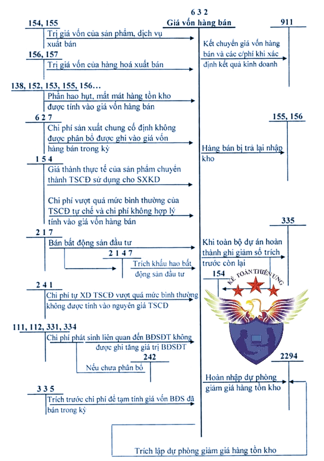
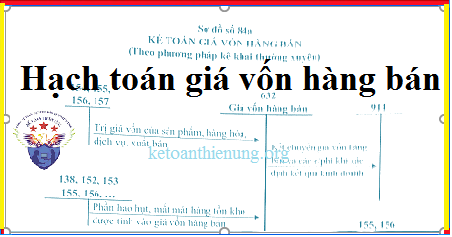

Cách hạch toán giá vốn hàng bán - Tài khoản 632 áp dụng chế độ kế toán theo Thông tư 99/2025/TT-BTC mới nhất 2026, hạch toán giá vốn hàng bán, hạch toán giá vốn dịch vụ, hạch toán nhận được chiết khấu thương mại, giảm giá hàng bán, hạch toán hàng bán trả lại ...
1. Tài khoản 632 - Giá vốn hàng bán
a) Tài khoản này dùng để phản ánh trị giá vốn của sản phẩm, hàng hóa, dịch vụ, tài sản sinh học (trừ cây lâu năm cho sản phẩm định kỳ và súc vật làm việc được kế toán là TSCĐ), BĐSPT; giá thành sản xuất của sản phẩm xây lắp bán trong kỳ. Ngoài ra, tài khoản này còn dùng để phản ánh các chi phí liên quan đến hoạt động kinh doanh BĐSPT như: Chi phí khấu hao; chi phí sửa chữa; chi phí cho thuê BĐSPT theo phương thức cho thuê hoạt động, chi phí bán BĐSPT,…
b) Khoản dự phòng giảm giá hàng tồn kho được tính vào giá vốn hàng bán trên cơ sở số lượng hàng tồn kho và phần chênh lệch giữa giá trị thuần có thể thực hiện được nhỏ hơn giá gốc hàng tồn kho. Khi xác định khối lượng hàng tồn kho bị giảm giá cần phải trích lập dự phòng, doanh nghiệp phải loại trừ khối lượng hàng tồn kho đã ký được hợp đồng tiêu thụ (có giá trị thuần có thể thực hiện được không thấp hơn giá trị ghi sổ) nhưng chưa chuyển giao cho khách hàng nếu có bằng chứng chắc chắn về việc khách hàng sẽ không từ bỏ thực hiện hợp đồng.
c) Khoản dự phòng hợp đồng có rủi ro lớn liên quan đến bán hàng tồn kho được ghi nhận vào giá vốn hàng bán.
d) Đối với phần giá trị hàng tồn kho hao hụt, mất mát, doanh nghiệp phải tính ngay vào giá vốn hàng bán (sau khi trừ đi các khoản bồi thường, nếu có).
đ) Đối với chi phí nguyên vật liệu trực tiếp tiêu hao vượt mức bình thường, chi phí nhân công trực tiếp, chi phí sản xuất chung cố định không phân bổ vào giá thành sản phẩm, dịch vụ sản xuất, doanh nghiệp phải tính ngay vào giá vốn hàng bán (sau khi trừ đi các khoản bồi thường, nếu có) kể cả khi sản phẩm, dịch vụ chưa được xác định là tiêu thụ.
e) Các khoản thuế nhập khẩu, thuế TTĐB, thuế bảo vệ môi trường đã tính vào giá trị hàng mua, nếu khi xuất bán hàng hóa mà các khoản thuế đó được hoàn lại thì được ghi giảm giá vốn hàng bán.
g) Các khoản chi phí không được coi là chi phí tính thuế TNDN theo quy định của Luật thuế nhưng có đầy đủ hóa đơn chứng từ và đã hạch toán đúng theo Chế độ kế toán thì không được ghi giảm chi phí kế toán mà chỉ điều chỉnh trong quyết toán thuế TNDN để làm tăng số thuế TNDN phải nộp.
Lưu ý: Các khoản chi phí không được coi là chi phí được trừ theo quy định của Luật thuế TNDN nhưng có đầy đủ hóa đơn chứng từ và đã hạch toán đúng theo Chế độ kế toán thì không được ghi giảm chi phí kế toán mà chỉ điều chỉnh trong quyết toán thuế TNDN để làm tăng số thuế TNDN phải nộp
Xem thêm: Các khoản chi phí không được trừ khi tính thuế TNDN
Sơ đồ chữ T hạch toán tài khoản 632

2. Kết cấu và nội dung Tài khoản 632 - Giá vốn hàng bán
|
Bên Nợ |
Bên Có |
| a. Nếu DN kế toán hàng tồn kho theo phương pháp kê khai thường xuyên. | |
|
- Đối với hoạt động sản xuất, kinh doanh, phản ánh: + Trị giá vốn của sản phẩm, hàng hóa, dịch vụ, tài sản sinh học (trừ cây lâu năm cho sản phẩm định kỳ và súc vật làm việc) đã bán trong kỳ; + Chi phí nguyên liệu, vật liệu trực tiếp, chi phí nhân công trực tiếp vượt trên mức bình thường và chi phí sản xuất chung cố định không phân bổ được tính vào giá vốn hàng bán trong kỳ; + Các khoản hao hụt, mất mát của hàng tồn kho sau khi trừ phần bồi thường do trách nhiệm cá nhân gây ra; + Số trích lập dự phòng giảm giá hàng tồn kho (chênh lệch giữa số dự phòng giảm giá hàng tồn kho phải lập kỳ này lớn hơn số dự phòng đã lập kỳ trước chưa sử dụng hết). - Đối với hoạt động kinh doanh BĐSPT, phản ánh: + Số khấu hao BĐSPT dùng để cho thuê hoạt động trích trong kỳ; + Chi phí sửa chữa, bảo dưỡng BĐSPT không được tính vào nguyên giá BĐSPT; + Chi phí phát sinh từ nghiệp vụ cho thuê hoạt động BĐSPT trong kỳ; + Giá trị còn lại và chi phí bán của BĐSPT bán trong kỳ. |
- Trị giá vốn của hàng bán bị trả lại; - Khoản chiết khấu thương mại, giảm giá hàng mua nhận được sau khi hàng mua đã tiêu thụ; - Các khoản thuế nhập khẩu, thuế TTĐB, thuế bảo vệ môi trường, thuế tài nguyên đã tính vào giá trị hàng mua, nếu khi xuất bán hàng hóa mà các khoản thuế đó được hoàn lại; - Khoản hoàn nhập dự phòng giảm giá hàng tồn kho cuối kỳ báo cáo (chênh lệch giữa số dự phòng phải lập kỳ này nhỏ hơn số dự phòng đã lập kỳ trước chưa sử dụng hết); - Kết chuyển giá vốn của sản phẩm, hàng hóa, dịch vụ đã bán trong kỳ sang Tài khoản 911 - Xác định kết quả kinh doanh; - Kết chuyển giá trị còn lại và chi phí bán, thanh lý BĐSPT để xác định lãi/lỗ của hoạt động bán, thanh lý BĐSPT trong kỳ. |
| Tài khoản 632 không có số dư cuối kỳ. | |
Doanh nghiệp có thể mở thêm các tài khoản chi tiết giá vốn hàng bán cho phù hợp với đặc điểm hoạt động sản xuất, kinh doanh và yêu cầu quản lý của đơn vị mình (như: giá vốn hàng hóa, sản phẩm, dịch vụ, BĐSPT,...).
3. Cách hạch toán giá vốn hàng bán một số nghiệp vụ:
|
3.1. Khi xuất bán các sản phẩm, hàng hóa, tài sản sinh học, dịch vụ hoàn thành được xác định là đã bán trong kỳ (kể cả sản phẩm, hàng hóa, dịch vụ tặng kèm), ghi: Nợ TK 632 - Giá vốn hàng bán Có các TK 154, 155, 156, 157, 215,… 3.2. Phản ánh các khoản chi phí được hạch toán trực tiếp vào giá vốn hàng bán: - Trường hợp mức sản phẩm thực tế sản xuất ra thấp hơn công suất bình thường thì doanh nghiệp phải tính và xác định chi phí sản xuất chung cố định phân bổ vào chi phí chế biến cho một đơn vị sản phẩm theo mức công suất bình thường. Khoản chi phí sản xuất chung cố định không phân bổ (không được tính vào giá thành sản xuất của sản phẩm phần chênh lệch giữa tổng số chi phí sản xuất chung cố định thực tế phát sinh lớn hơn chi phí sản xuất chung cố định tính vào giá thành sản xuất sản phẩm) được ghi nhận vào giá vốn hàng bán trong kỳ, ghi:
Nợ TK 632 - Giá vốn hàng bán
Có TK 627 - Chi phí sản xuất chung.
- Phản ánh khoản hao hụt, mất mát của hàng tồn kho sau khi trừ (-) phần bồi thường do trách nhiệm cá nhân gây ra theo quyết định xử lý của cấp có thẩm quyền được tính vào giá vốn hàng bán, ghi:
Nợ TK 632 - Giá vốn hàng bán
Có các TK 152, 153, 156, 138 (1381),…
3.3. Hạch toán khoản trích lập hoặc hoàn nhập dự phòng giảm giá hàng tồn kho - Trường hợp số dự phòng giảm giá hàng tồn kho phải lập kỳ này lớn hơn số đã lập kỳ trước chưa sử dụng hết, doanh nghiệp trích lập bổ sung phần chênh lệch, ghi:
Nợ TK 632 - Giá vốn hàng bán
Có TK 229 - Dự phòng tổn thất tài sản (2294).
- Trường hợp số dự phòng giảm giá hàng tồn kho phải lập kỳ này nhỏ hơn số đã lập kỳ trước chưa sử dụng hết, doanh nghiệp hoàn nhập phần chênh lệch, ghi:
Nợ TK 229 - Dự phòng tổn thất tài sản (2294)
Có TK 632 - Giá vốn hàng bán.
3.4. Khi trích lập dự phòng cho các hợp đồng có rủi ro lớn liên quan đến hàng tồn kho, ghi:
Nợ TK 632 - Giá vốn hàng bán
Có TK 352 - Dự phòng phải trả.
3.5. Các nghiệp vụ kinh tế liên quan đến hoạt động kinh doanh BĐSPT: - Định kỳ tính, trích khấu hao BĐSPT đang cho thuê hoạt động, ghi:
Nợ TK 632 - Giá vốn hàng bán (chi tiết chi phí kinh doanh BĐSPT)
Có TK 2147 - Hao mòn BĐSPT.
- Khi phát sinh chi phí liên quan đến BĐSPT sau ghi nhận ban đầu nếu không thoả mãn điều kiện ghi tăng giá trị BĐSPT, ghi:
Nợ TK 632 - Giá vốn hàng bán (chi phí sửa chữa, bảo dưỡng thường xuyên)
Nợ TK 242 - Chi phí chờ phân bổ (chi phí sửa chữa, bảo dưỡng định kỳ)
Có các TK 111, 112, 152, 153, 334,....
- Định kỳ, phân bổ chi phí sửa chữa, bảo dưỡng định kỳ BĐSPT, ghi:
Nợ TK 632 - Giá vốn hàng bán (chi tiết chi phí kinh doanh BĐSPT)
Có TK 242 - Chi phí chờ phân bổ.
- Các chi phí liên quan đến cho thuê hoạt động BĐSPT, ghi:
Nợ TK 632 - Giá vốn hàng bán (chi tiết chi phí kinh doanh BĐSPT)
Có các TK 111, 112, 331, 334,....
- Kế toán giảm nguyên giá và giá trị hao mòn của BĐSPT (nếu có) do bán, thanh lý, ghi:
Nợ TK 2147 - Hao mòn BĐSPT (giá trị hao mòn lũy kế BĐSPT)
Nợ TK 632 - Giá vốn hàng bán (giá trị còn lại của BĐSPT)
Có TK 217 - Bất động sản đầu tư (nguyên giá).
- Các chi phí bán BĐSPT phát sinh, ghi:
Nợ TK 632 - Giá vốn hàng bán (chi tiết chi phí kinh doanh BĐSPT)
Nợ TK 133 - Thuế GTGT được khấu trừ (nếu có)
Có các TK 111, 112, 331,....
- Kế toán bán, thanh lý bất động sản đầu tư xem hướng dẫn tại Tài khoản 217 - Bất động sản đầu tư. 3.6. Trường hợp dùng sản phẩm do doanh nghiệp sản xuất ra chuyển thành TSCĐ để sử dụng, ghi:
Nợ TK 211 - TSCĐ hữu hình
Có TK 154 - Chi phí sản xuất, kinh doanh dở dang
Có TK 3331 - Thuế giá trị gia tăng phải nộp (nếu có).
3.7. Hàng bán bị trả lại nhập kho, ghi:
Nợ các TK 155,156
Có TK 632 - Giá vốn hàng bán.
3.8. Trường hợp khoản chiết khấu thương mại hoặc giảm giá hàng bán nhận được sau khi mua hàng, doanh nghiệp phải căn cứ vào tình hình biến động của hàng tồn kho để phân bổ số chiết khấu thương mại, giảm giá hàng bán được hưởng dựa trên số hàng tồn kho chưa tiêu thụ, số đã xuất dùng cho hoạt động đầu tư xây dựng hoặc đã xác định là tiêu thụ trong kỳ:
Nợ các TK 111, 112, 331,...
Có các TK 152, 153, 154, 155, 156 (giá trị khoản CKTM, GGHB của số hàng tồn kho chưa tiêu thụ trong kỳ)
Có TK 241 - Xây dựng cơ bản dở dang (giá trị khoản CKTM, GGHB của số hàng tồn kho đã xuất dùng cho hoạt động đầu tư xây dựng)
Có TK 632 - Giá vốn hàng bán (giá trị khoản CKTM, GGHB của số hàng tồn kho đã tiêu thụ trong kỳ).
3.9. Kết chuyển giá vốn hàng bán của các sản phẩm, hàng hóa, BĐSPT, dịch vụ được xác định là đã bán trong kỳ vào bên Nợ Tài khoản 911 - Xác định kết quả kinh doanh, ghi:
Nợ TK 911 - Xác định kết quả kinh doanh
Có TK 632 - Giá vốn hàng bán.
|
Chúc các bạn thành công! Kế toán Diệu Tâm là 1 địa chỉ dạy học thực hành kế toán thực tế tốt nhất tại Hà Nội: Dạy hoàn thiện sổ sách, lập Báo cáo tài chính, Quyết toán thuế trực tiếp trên chứng từ thực tế.
---------------------------------
